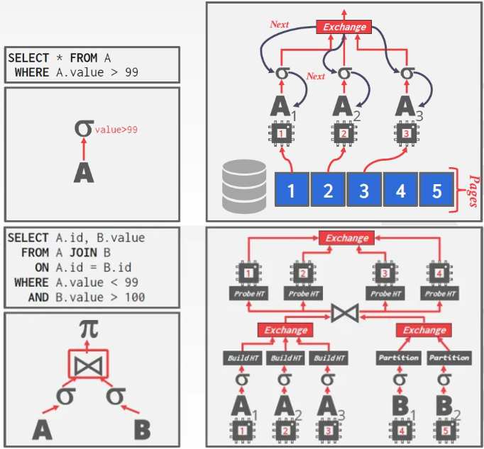

Query Execution II
约 1833 个字 6 行代码 预计阅读时间 6 分钟
我们在上一节中已经讨论了怎么将 operators 组织为一个 query plan。当时我们是假设 query 是由一个 worker (是 DBMS 的组件，负责代表客户机执行任务并返回结果，可能是一个线程或进程) 执行。然而在实践中， query 往往是由多个 workers 并发执行 。并发执行为 DBMS 提供了很多好处：
- 提高吞吐量 (每秒能执行多少 query)，降低延迟 (执行一条 query 需要多久)。
- 从 DBMS 用户的角度看，提高了响应性和可用性。
- 减低总体拥有成本 (TCO)，这个成本包括硬件采购和软件许可，以及部署DBMS的劳动力开销和运行机器所需的能源。
BMS支持两种类型的并发：inter-query parallelism, intra-query parallelism。
Note
Inter-query VS. Intra-query Parallelism
- Inter-query Parallelism：查询间并发，即不同查询间并行执行
- 增加吞吐量，减少延迟
- Intra-query Parallelism：查询内并发，即查询内不同 operators 并行执行
- 减少长时查询的延迟，主要用于 Streaming
Parallel VS. Distributed DBMS
- Parallel DBMSs：如运行在多核 CPU 上
- 每个 DB 节点物理上非常接近，通过高速 LAN 相连接
- 通信成本极小
- Distributed DBMSs：如分布式数据库
- 节点之间距离可能很远，通过公网相连接
- 通信成本和通信可能出现的问题不可忽略
本节大纲：
- Process Models
- Execution Parallelism
- I/O Parallelism
Process Models¶
DBMS 的 process model 定义了 多用户数据库系统处理并发请求的架构 。在下文中， DBMS 的组件，负责代表客户机执行任务并返回结果，它可能是 Process(es)，也可能是 Thread(s)。几乎所有 DBMS 都想实现并发执行，但要将这件事做对很难，其难度包括这几个方面：协同工作的开销，调度，并发问题处理，资源冲突。
Approach # 1: Process per DBMS Worker
Approach # 2: Process Pool
Approach # 3: Thread per DBMS Worker
Process per Worker¶
用户请求经过 Dispatcher 后，由 Dispatcher 分配相应的 Worker 完成查询并返回结果。 每个 worker 都是一个单独的操作系统进程：
- 依赖 操作系统的调度器 来调度
- 使用 共享内存 来存储全局数据结构
- 单个 worker 崩溃不会引起整个系统崩溃
这种 Process Model 出现在线程跨平台支持很不稳定的时代，主要是为了解决系统的可移植性问题。使用这种 Process Model 的数据库有历史版本的 DB2、ORACLE 和 PostgreSQL 等。
Process Pool¶
用户请求经过 Dispatcher 后，由 Dispatcher 分配相应的 Worker 完成查询，将结果返回 Dispatcher，后者再返回给用户。每个 Worker 可以使用 Worker Pool 中任意空闲的 Process(es)：
- 仍依赖 操作系统的调度器 来调度
- 也使用 共享内存 来存储全局数据结构
- 不利于使用 CPU 缓存
使用这种 Process Model 的数据库有 DB2、PostgreSQL(2015)。
Thread per Worker¶
整个 DBMS 由一个 Process 和多个 Worker Threads 构成：
- DBMS 自己控制调度策略：每个查询拆成多少个任务、使用多少个 CPU cores、将任务分配到哪个 core 上，每个 task 的输出存储在哪里。自己控制调度策略的理由与自己构建 Buffer Pools 的理由是一样的：DBMS 比 OS 有更多的领域知识。
- dispatcher 不一定存在
- thread 崩溃可能导致整个系统崩溃
- 使用多线程架构的优势：上下文切换成本更低；天然地可以在所有线程之间共享全局信息，而无需使用共享内存
使用这种 Process Model 的数据库有 DB2、MSSQL、MySQL、Oracle (2014) 及其它近 10 年出现的 DBMS 等。
Execution Parallelism¶
并发执行 包括：查询间并发 (inter-query parallelism), 查询内并发 (intra-query parallelism)。
Inter-Query Parallelism¶
查询间并发 ，通过并行执行多个查询来提高 DBMS 性能 (增加吞吐量，减少延迟)。
若这些查询都是只读查询，那么处理不同查询之间的关系无需额外的工作；若查询存在更新操作，那么处理好不同查询之间的关系将变得很难。相关内容将在后续 (Lect16) 中介绍。
Intra-Query parallelism¶
查询内并发 ，通过并行执行单个查询的多个 operators 来提高 DBMS 性能 (减少长时查询的延迟，主要用于 Streaming)：
- Approach # 1：Intra-Operator
- Approach # 2：Inter-Operator
- Approach # 3：Bushy
这些方法并不相互排斥。在给定的工作负载上，以一种优化性能的方式组合这些技术是 DBMS 的责任。
Intra-operator Parallelism (Horizontal)¶
operator 内的并发
将 data 拆解成多个独立子集，然后对这些子集并行地执行相应的 operator，DBMS 通过将 exchange operator 引入查询计划，来合并子集处理的结果，过程类似 MapReduce。exchange operator 会阻止 DBMS 在计划中执行它上面的 operator，直到它从 child operator 接收到所有的数据。
一般情况下有三种类型的 exchange operator：
- Gather：将来自多个 worker 的结果合并到一个输出流中
- Repartition：跨多个输出流重新组织多个输入流。
- Distribute：将一个输入流分割成多个输出流。

Inter-operator Parallelism (Vertical)¶
operator 间的并发 ，也称为 pipelined parallelism。
将 operators 串成 pipeline，数据从上游流向下游，一般无需等待前一步操作执行完毕。
这种方式在传统 DBMSs 中并不常用，因为许多 operators，如 join，必须扫描所有 tuples 之后才能得到结果。它更多地被用在流处理系统，如 Spark、Nifi、Kafka,、Storm、Flink、Heron。
Bushy Parallelism¶
Inter-operator Parallelism 的扩展，worker 同时执行来自 query plan 的不同 segment 的多个 operator，仍需要 exchange operator 来结合多个 segment 的中间结果。
I/O Parallelism¶
值得注意的是，使用额外的 processes/threads 来并行地执行查询可以通过提高 CPU 利用率来提高 DBMS 效率；但如果 DBMS 效率瓶颈出现在 disk 数据存取上，这种优化带来的效果就非常有限，甚至有可能因为 disk I/O 的提高导致整体性能下降，如 cache miss rate 提高等等。将 DBMS 安装在多个存储设备上来实现 I/O 并行可以从一定程度上缓解这个问题。
Multi-Disk Parallelism¶
多磁盘存储 ：通过 OS 或硬件配置将 DBMS 的数据文件存储到多个存储设备上，整个过程对 DBMS 透明 (所以上面提到的worker并不知道这里发生了什么)，如使用 RAID。
一些 DBMS 甚至允许用户为单个数据库指定磁盘存储位置，并由缓存池负责将页映射到磁盘位置。
Database Partitioning¶
分区 ：将一个逻辑上的表拆开，在不同的物理内存片段 (physical segments) 上进行存储。理想情况下该方法应该对应用透明，但这并不一定能实现。
Vertical Partitioning¶
垂直分区 ：原理上类似列存储数据库，将表中的部分属性存储到不同的地方，并且需要存储一些元组信息来帮助重建原始记录。如：
CREATE TABLE foo (
attr1 INT,
attr2 INT,
attr3 INT,
attr4 TEXT -- attr4 数据非常大 --
);
Horizontal Partitioning¶
水平分区 ：基于某个可定制的 partitioning key 将 table 的不同 segments 分开存储，包括：
- Hash Partitioning
- Range Partitioning
- Predicate Partitioning
颜色主题调整
评论区~
有用的话请给我个赞和 star => 快来跟我聊天~
快来跟我聊天~